Dot plot
In a dot plot, the width of a dot corresponds to the bin width (or maximum width, depending on the binning algorithm), and dots are stacked, with each dot representing one observation.
geom_dotplot(mapping = NULL, data = NULL, position = "identity", ..., binwidth = NULL, binaxis = "x", method = "dotdensity", binpositions = "bygroup", stackdir = "up", stackratio = 1, dotsize = 1, stackgroups = FALSE, origin = NULL, right = TRUE, width = 0.9, drop = FALSE, na.rm = FALSE, show.legend = NA, inherit.aes = TRUE)
Arguments
| mapping | Set of aesthetic mappings created by |
|---|---|
| data | The data to be displayed in this layer. There are three options: If A A |
| position | Position adjustment, either as a string, or the result of a call to a position adjustment function. |
| ... | other arguments passed on to |
| binwidth | When |
| binaxis | The axis to bin along, "x" (default) or "y" |
| method | "dotdensity" (default) for dot-density binning, or "histodot" for fixed bin widths (like stat_bin) |
| binpositions | When |
| stackdir | which direction to stack the dots. "up" (default), "down", "center", "centerwhole" (centered, but with dots aligned) |
| stackratio | how close to stack the dots. Default is 1, where dots just just touch. Use smaller values for closer, overlapping dots. |
| dotsize | The diameter of the dots relative to |
| stackgroups | should dots be stacked across groups? This has the effect
that |
| origin | When |
| right | When |
| width | When |
| drop | If TRUE, remove all bins with zero counts |
| na.rm | If |
| show.legend | logical. Should this layer be included in the legends?
|
| inherit.aes | If |
Details
There are two basic approaches: dot-density and histodot.
With dot-density binning, the bin positions are determined by the data and
binwidth, which is the maximum width of each bin. See Wilkinson
(1999) for details on the dot-density binning algorithm. With histodot
binning, the bins have fixed positions and fixed widths, much like a
histogram.
When binning along the x axis and stacking along the y axis, the numbers on y axis are not meaningful, due to technical limitations of ggplot2. You can hide the y axis, as in one of the examples, or manually scale it to match the number of dots.
Aesthetics
geom_dotplot understands the following aesthetics (required aesthetics are in bold):
xyalphacolourfillgroup
Computed variables
- x
center of each bin, if binaxis is "x"
- y
center of each bin, if binaxis is "x"
- binwidth
max width of each bin if method is "dotdensity"; width of each bin if method is "histodot"
- count
number of points in bin
- ncount
count, scaled to maximum of 1
- density
density of points in bin, scaled to integrate to 1, if method is "histodot"
- ndensity
density, scaled to maximum of 1, if method is "histodot"
References
Wilkinson, L. (1999) Dot plots. The American Statistician, 53(3), 276-281.
Examples
#>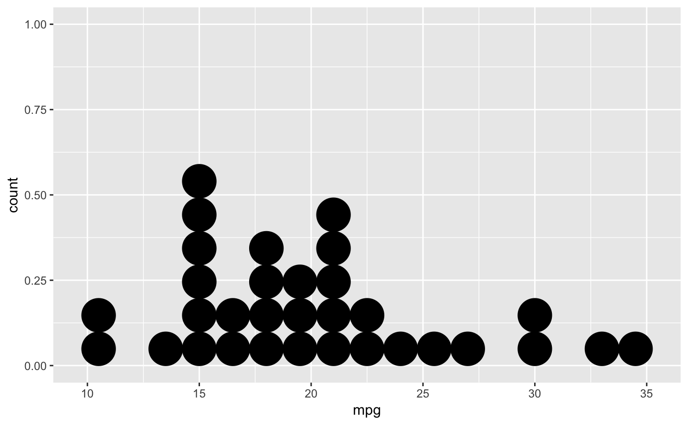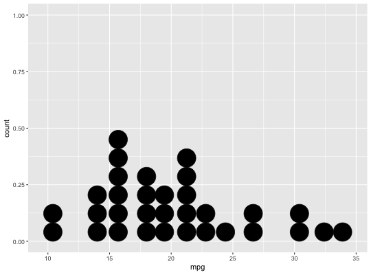# Use fixed-width bins ggplot(mtcars, aes(x = mpg)) + geom_dotplot(method="histodot", binwidth = 1.5)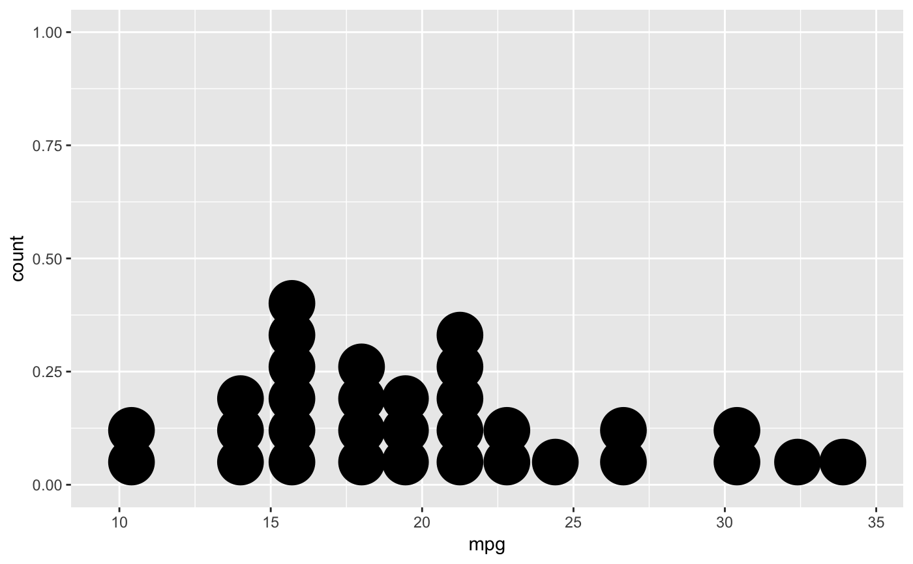# Some other stacking methods ggplot(mtcars, aes(x = mpg)) + geom_dotplot(binwidth = 1.5, stackdir = "center")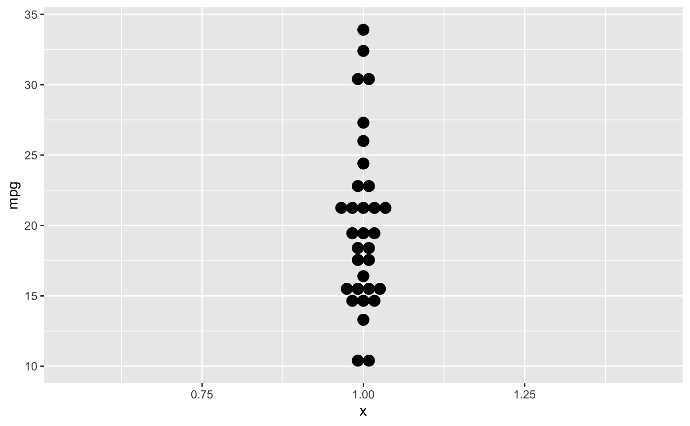# y axis isn't really meaningful, so hide it ggplot(mtcars, aes(x = mpg)) + geom_dotplot(binwidth = 1.5) + scale_y_continuous(NULL, breaks = NULL)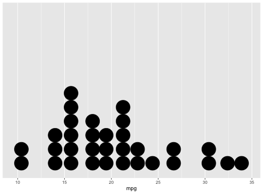# Overlap dots vertically ggplot(mtcars, aes(x = mpg)) + geom_dotplot(binwidth = 1.5, stackratio = .7)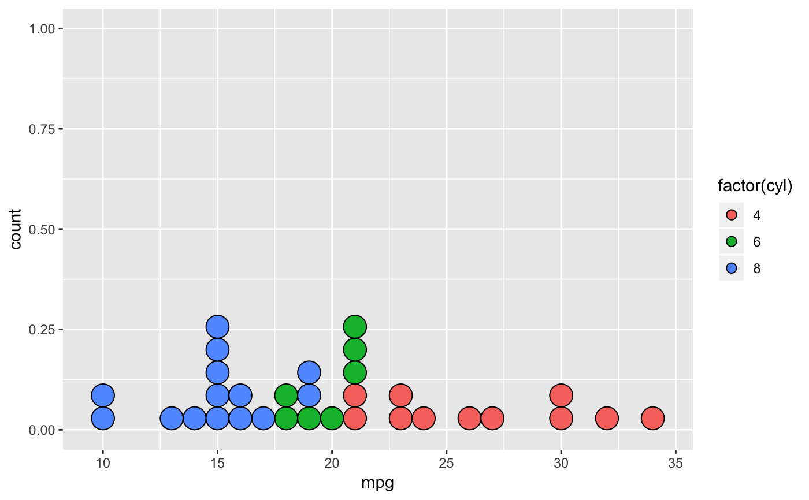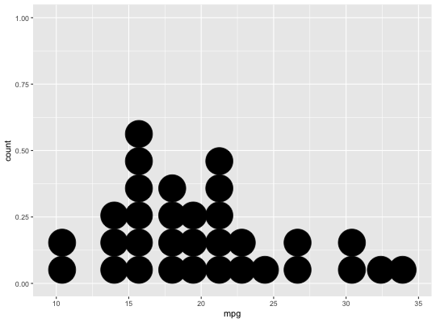# Examples with stacking along y axis instead of x ggplot(mtcars, aes(x = 1, y = mpg)) + geom_dotplot(binaxis = "y", stackdir = "center")#>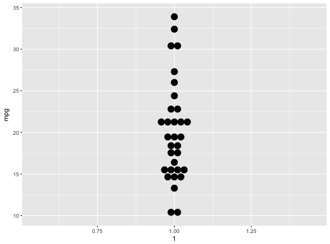#>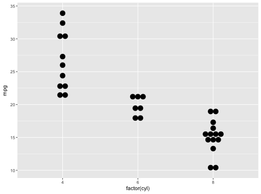ggplot(mtcars, aes(x = factor(cyl), y = mpg)) + geom_dotplot(binaxis = "y", stackdir = "centerwhole")#>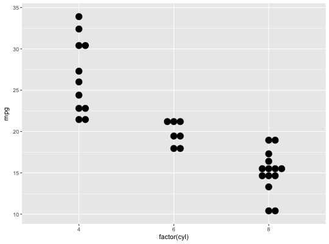ggplot(mtcars, aes(x = factor(vs), fill = factor(cyl), y = mpg)) + geom_dotplot(binaxis = "y", stackdir = "center", position = "dodge")#>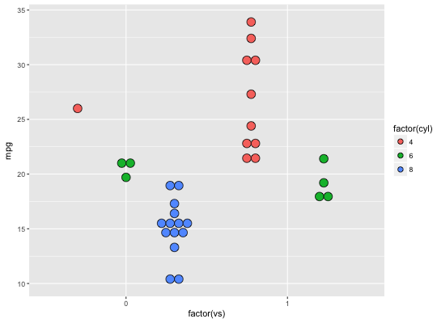# binpositions="all" ensures that the bins are aligned between groups ggplot(mtcars, aes(x = factor(am), y = mpg)) + geom_dotplot(binaxis = "y", stackdir = "center", binpositions="all")#>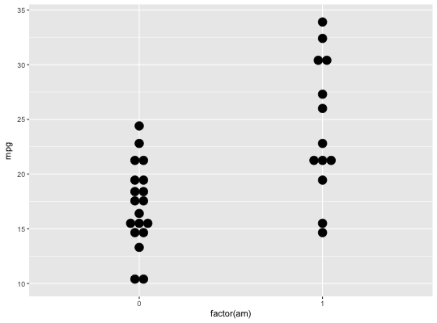# Stacking multiple groups, with different fill ggplot(mtcars, aes(x = mpg, fill = factor(cyl))) + geom_dotplot(stackgroups = TRUE, binwidth = 1, binpositions = "all")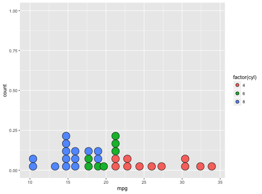ggplot(mtcars, aes(x = mpg, fill = factor(cyl))) + geom_dotplot(stackgroups = TRUE, binwidth = 1, method = "histodot")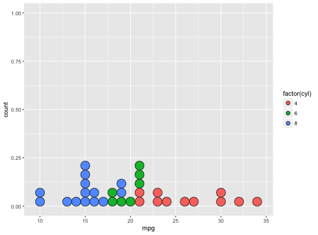ggplot(mtcars, aes(x = 1, y = mpg, fill = factor(cyl))) + geom_dotplot(binaxis = "y", stackgroups = TRUE, binwidth = 1, method = "histodot")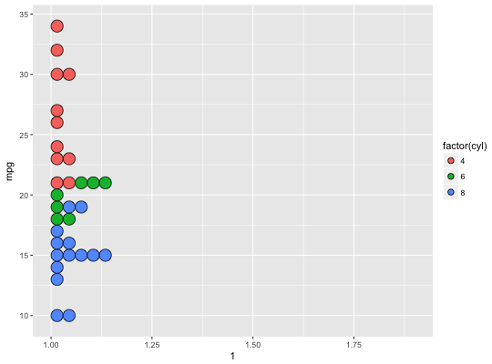